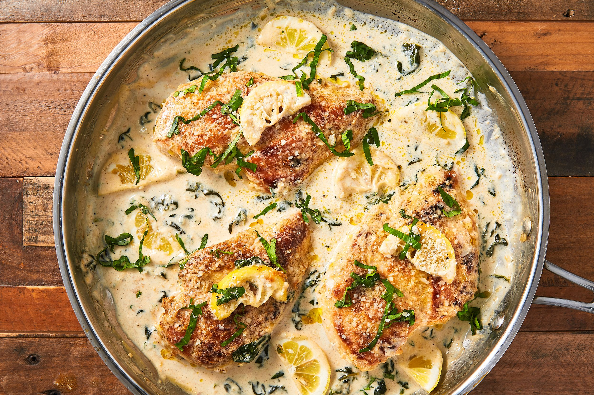

Lemon Parmesan Chicken

Description
Ingredients
For the Chicken
- 6 chicken tenders
- 1/2 tbsp. garlic powder, onion powder, adobo seasoning
- 1/2 tbsp. parsley, oregano, thyme
- 2 tbsp. olive oil for frying
- White vinegar for cleaning the chicken
For the Sauce
- 1 tbsp. butter
- 2 cups baby spinach
- 2/3 cup chicken broth
- 1 cup heavy cream
- 1/4-3/4 cup freshly grated parmesan
- zest of 1 lemon to be sliced in rounds
- Garlic powder, adobo seasoning season to desired taste
- Dried parsley flakes, herbs de provence (or italian seasoning) sprinkle sprinkle
Instructions
- Slice the chicken tenders in half and place in a mixing bowl.
- Fill the bowl with white vinegar to a little above the chicken. Swirl the chicken around
and then let it soak in the vinegar for 3 minutes.
- Mix the sesaonings for the chicken together in a small bowl. Next, bring the oil in your frying
pan up to medium heat.
- Drain your chicken in a colander and rinse the bowl out, then place the chicken back in
the bowl. Pour your chicken seasoning in and mix it all up, then add the coated pieces to your
frying pan. Fry the chicken until golden brown, about 4 minutes on each side.
- While the chicken cooks, gather your spinach and wash, if not pre-washed.
- After the chicken is cooked, remove from the pan and set aside. Turn the heat down to low-medium.
- To the pan, add the butter. When the butter is melted, add spinach and cook until wilted,
about 1-2 minutes. Add the chicken broth, heavy cream, parmesan. Grab your lemon and wash it
off, then zest the lemon over the sauce.
- Stir the sauce and let it simmer for about 5 minutes, then season the sauce tour desired
taste with the garlic powder, adobo seasoning, and herbs. While the sauce is simmering,
slice up the lemon into rounds and remove the seeds inside. Add the lemons to the sauce.
- Once the sauce is to your liking, add the chicken back into the sauce and pour over to
warm it back up.
- Serve with pasta or mashed potatoes, also whatever vegetables you desire. Garnish
with parsley and/or fresh grated parmesan. Don't forget the garlic bread. Enjoy!